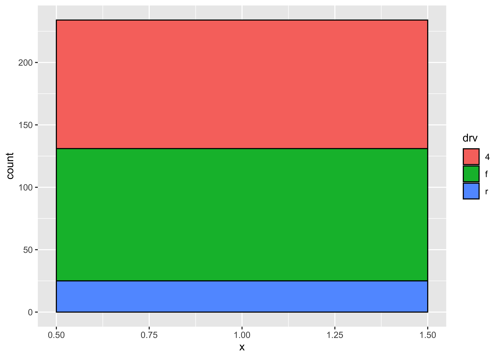

library(tidyverse)
library(mosaic)
library(ggformula)
library(plotrix) # Fan, Pyramid Chart
library(ggparliament) # Parliament Chart
library(ggpol) # Parliament, Arc-Bar and other interesting charts
library(data.tree) # Many plots related to heirarchical data
# install.packages("waffle", repos = "https://cinc.rud.is")
library(waffle)
library(tidygraph) # Trees, Dendros, and Circle Packings
library(ggraph) # Trees, Dendros, and Circle Packings
library(echarts4r) # Interactive Charts
library(patchwork) # Arrange your plots🍕 Parts of a Whole
Parts of a Whole
Pie Charts
Fan Charts
Donut Charts
Grouping
Stacking
Circular Bar Charts
Dot Plots
Mosaic Charts
Parliament Charts
Waffle Charts
Abstract
Slices, Portions, Counts, and Aggregates of Data
There are a good few charts available to depict things that constitute other bigger things. We will discuss a few of these: Pie, Fan, and Donuts; Waffle and Parliament charts; Trees, Dendrograms, and Circle Packings. (The last three visuals we will explore along with network diagrams in a later module.)
So let us start with “eating humble pie”: discussing a Pie chart first.
A pie chart is a circle divided into sectors that each represent a proportion of the whole. It is often used to show percentage, where the sum of the sectors equals 100%.
The problem is that humans are pretty bad at reading angles. This ubiquitous chart is much vilified in the industry and bar charts that we have seen earlier, are viewed as better options. On the other hand, pie charts are ubiquitous in business circles, and are very much accepted! Do also read this spirited defense of pie charts here. https://speakingppt.com/why-tufte-is-flat-out-wrong-about-pie-charts/
And we will also see that there is an attractive, and similar-looking alternative, called a fan chart which we will explore here.
Base R has a simple pie command that does the job. Let’s create some toy data first:
pie_data <- tibble(
sales = c(0.12, 0.3, 0.26, 0.16, 0.04, 0.12),
# Labels MUST be character entries for `pie` to work
labels = c("Blueberry","Cherry","Apple","Boston Cream",
"Other","Vanilla Cream")
)
pie_data
pie(
x = pie_data$sales,
labels = pie_data$labels, # Character Vector is a MUST
# Pie is within a square of 1 X 1 units
# Reduce radius if needed to see labels properly
radius = 0.95,
init.angle = 90, # First slice starts at 12 o'clock position
# Change the default colours. Comment this and see what happens.
col = grDevices::hcl.colors(palette = "Plasma", n = 6)
)
We create a bar chart or a column chart as appropriate, with bars filled by category. The width parameter is set to 1 so that the bars touch. The bars have a fixed width along the x-axis; the height of the bar varies based on the number we wish to show. Then the coord_polar(theta = "y") converts the bar plot into a pie.
# Using gf_col since we have a count/value column already
pie_data %>%
gf_col(sales ~ 1, fill = ~ labels, width = 1)
pie_data %>%
gf_col(sales ~ 1, fill = ~ labels, width = 1) %>%
gf_refine(coord_polar(theta = "y"))
# Using gf_bar since we don't have ready made counts
gf_bar(data = mpg,
~ 1,
fill = ~ drv,
color = "black", # border for the bars/slices
width = 1)
gf_bar(data = mpg,
~ 0.5,
fill = ~ drv,
color = "black", # border for the bars/slices
width = 1) %>%
gf_theme(theme_minimal()) %>%
gf_theme(theme(axis.line.y = element_blank(),
axis.text.y = element_blank(),
axis.title.y = element_blank())) %>%
gf_refine(coord_polar(theta = "y"))



Here is a basic interactive pie chart withecharts4r:
pie_data <- tibble(
sales = c(0.12, 0.3, 0.26, 0.16, 0.04, 0.12),
labels = c("Blueberry","Cherry","Apple","Boston Cream","Other",
"Vanilla Cream"))
pie_data %>%
e_charts(x = labels) %>%
e_pie(serie = sales, clockwise = TRUE,
startAngle = 90) %>%
e_legend(list(orient = "vertical",
left = "right")) %>%
e_tooltip()We can add more bells and whistles to the humble-pie chart, and make a Nightingale rosechart out of it:
pie_data <- tibble(
sales = c(0.12, 0.3, 0.26, 0.16, 0.04, 0.12),
labels = c("Blueberry","Cherry","Apple","Boston Cream","Other",
"Vanilla Cream"))
pie_data %>%
e_charts(x = labels) %>%
e_pie(serie = sales, clockwise = TRUE,
startAngle = 90,
roseType = "area") %>% # try "radius"
# Lets move the legend
e_legend(left = "right", orient = "vertical") %>%
e_tooltip()
pie_data %>%
e_charts(x = labels) %>%
e_pie(serie = sales, clockwise = TRUE,
startAngle = 90,
roseType = "radius") %>%
# Lets move the legend
e_legend(left = "right", orient = "vertical") %>%
e_tooltip()For more information and customization look at https://echarts.apache.org/en/option.html#series-pie
The fan Plot
The fan plot (from the plotrix package) displays numerical values as arcs of overlapping sectors. This allows for more effective comparison:
plotrix::fan.plot(
x = pie_data$sales,
labels = pie_data$labels,
col = grDevices::hcl.colors(palette = "Plasma", n = 6),
shrink = 0.03,
# How much to shrink each successive sector
label.radius = 1.15,
main = "Fan Plot of Ice Cream Flavours",
# ticks = 360,
# if we want tick marks on the circumference
max.span = pi
)
There is no fan plot possible with echarts4r, as far as I know.
The Donut Chart
The donut chart suffers from the same defects as the pie, so should be used with discretion. The donut chart is essentially a gf_rect from ggformula, plotted on a polar coordinate set of of axes:
Let us make some toy data:
# Data
df <- tibble(group = LETTERS[1:3],
value = c(25, 20, 35))
df <-
df %>%
dplyr::mutate(fraction = value / sum(value), # percentages
ymax = cumsum(fraction), # cumulative percentages
ymin = lag(ymax, 1, default = 0),
# bottom edge of each
label = paste0(group, "\n value: ", value),
labelPosition = (ymax + ymin) / 2 # labels midway on arcs
)
df
df %>%
# gf_rect() formula: ymin + ymax ~ xmin + xmax
# Bars with varying thickness (y) proportional to data
# Fixed length x (2 to 4)
gf_rect(ymin + ymax ~ 2 + 4,
fill = ~ group, colour = "black") %>%
gf_label(labelPosition ~ 3.5,
label = ~ label,
size = 4) %>%
# When switching to polar coords:
# x maps to radius
# y maps to angle theta
# so we create a "hole" in the radius, in x
gf_refine(coord_polar(theta = "y",
direction = 1)) %>%
# Up to here will give us a pie chart
# Now to create the hole
# try to play with the "0"
# Recall x = [2,4]
gf_refine(xlim(c(-2, 5))) %>%
gf_theme(theme = theme_void()) %>%
gf_theme(legend.position = "none")
The donut chart is simply a variant of the pie chart in echarts4r:
df <- tibble(group = LETTERS[1:3],
value = c(25, 20, 35))
df <-
df %>%
dplyr::mutate(fraction = value / sum(value), # percentages
ymax = cumsum(fraction), # cumulative percentages
ymin = lag(ymax, 1, default = 0),
# bottom edge of each
label = paste0(group, "\n value: ", value),
labelPosition = (ymax + ymin) / 2 # labels midway on arcs
)
df
df %>%
e_charts(x = group, width = 400) %>%
e_pie(serie = value,
clockwise = TRUE,
startAngle = 90,
radius = c("50%", "70%")
) %>%
e_legend(left = "right", orient = "vertical") %>%
e_tooltip()
Waffle charts are often called “square pie charts” !
Here we will need to step outside of ggformula and get into ggplot itself momentarily. (Always remember that ggformula is a simplified and intuitive method that runs on top of ggplot.) We will use the waffle package.
# install.packages("waffle", repos = "https://cinc.rud.is")
library(waffle)
# Data
df <- tibble(group = LETTERS[1:3],
value = c(25, 20, 35))
df# Waffle plot
# Using ggplot, sadly not yet ggformula
ggplot(df, aes(fill = group, values = value)) +
geom_waffle(
n_rows = 8,
size = 0.33,
colour = "white",
na.rm = TRUE
) +
scale_fill_manual(
name = NULL,
values = c("#BA182A", "#FF8288", "#FFDBDD"),
labels = c("A", "B", "C")
) +
coord_equal() +
theme_void()
The package ggpol offers an interesting visualization in the shape of a array of “seats” in a parliament. (There is also a package called ggparliament which in my opinion is a bit cumbersome, having a two step procedure to convert data into “parliament form” etc. )
df <- tibble(group = LETTERS[1:3],
value = c(25, 20, 35))
# Parliament Plot
ggplot(df) +
ggpol::geom_parliament(aes(seats = value,
fill = group),
r0 = 2, # inner radius
r1 = 4 # Outer radius
) +
scale_fill_manual(name = NULL,
values = c("#BA182A", "#FF8288", "#FFDBDD"),
labels = c("A", "B", "C")) +
coord_equal() +
theme_void() 
Trees, Dendrograms, and Circle Packings
There are still more esoteric plots to explore, if you are hell-bent on startling people ! There is an R package called ggraph, that can do these charts, and many more:
ggraph is an extension of
ggplot2aimed at supporting relational data structures such as networks, graphs, and trees. While it builds upon the foundation ofggplot2and its API it comes with its own self-contained set of geoms, facets, etc., as well as adding the concept of layouts to the grammar.
We will explore these charts when we examine network diagrams. For now, we can quickly see what these diagrams look like. Although the R-code is visible to you, it may not make sense at the moment!
From the R Graph Gallery Website :
Dendrograms can be built from:
Hierarchical dataset: think about a CEO managing team leads managing employees and so on.
Clustering result: clustering divides a set of individuals in group according to their similarity. Its result can be visualized as a tree.
# create an edge list data frame giving the hierarchical structure of your individuals
d1 <- tibble(from = "origin", to = paste("group", seq(1,5), sep = ""))
d2 <- tibble(from = rep(d1$to, each=5), to = paste("subgroup", seq(1,25), sep="_"))
edges <- rbind(d1, d2)
edges# Create a graph object
mygraph1 <- tidygraph::as_tbl_graph( edges )
# Basic tree
p1 <- ggraph(mygraph1, layout = 'dendrogram', circular = TRUE) +
geom_edge_diagonal() +
geom_node_point() +
theme_void()# create a data frame
data <- tibble(
level1="CEO",
level2=c( rep("boss1",4), rep("boss2",4)),
level3=paste0("mister_", letters[1:8])
)
# transform it to a edge list!
edges_level1_2 <- data %>%
select(level1, level2) %>% unique %>% rename(from=level1, to=level2)
edges_level2_3 <- data %>%
select(level2, level3) %>% unique %>% rename(from=level2, to=level3)
edge_list <- rbind(edges_level1_2, edges_level2_3)
edge_list# Now we can plot that
mygraph2 <- as_tbl_graph(edge_list)
p2 <- ggraph(mygraph2, layout = 'dendrogram', circular = FALSE) +
geom_edge_diagonal() +
geom_node_point() +
theme_void()p1 + p2 + theme(aspect.ratio = 1)
Circle Packing
library(tidygraph)
library(ggraph)
graph <- tbl_graph(flare$vertices, flare$edges)
set.seed(1)
ggraph(graph, 'circlepack', weight = size) +
geom_node_circle(aes(fill = as_factor(depth)), size = 0.25, n = 50) +
coord_fixed() +
scale_fill_discrete(name = "Depth") +
theme_void()
- Use the
penguinsdataset from thepalmerpenguinspackage and plot pies, fans, and donuts as appropriate. - Look at the
whigsandhighschooldatasets in the packageggraph. Plot Pies, Fans and if you are feeling confident, Trees, Dendrograms, and Circle Packings as appropriate for these.
Iaroslava.2020. A Parliament Diagram in R, https://datavizstory.com/a-parliament-diagram-in-r/
Venn Diagrams in R, Venn diagram in ggplot2 | R CHARTS (r-charts.com)
Generate icon-array charts without code! https://iconarray.com
Coene, John. 2023. Echarts4r: Create Interactive Graphs with “Echarts JavaScript” Version 5. https://CRAN.R-project.org/package=echarts4r.
Glur, Christoph. 2023. data.tree: General Purpose Hierarchical Data Structure. https://CRAN.R-project.org/package=data.tree.
Hickman, Robert, Zoe Meers, and Thomas J. Leeper. 2018. ggparliament: Parliament Plots. https://CRAN.R-project.org/package=ggparliament.
J, Lemon. 2006. “Plotrix: A Package in the Red Light District of r.” R-News 6 (4): 8–12.
Pedersen, Thomas Lin. 2024a. ggraph: An Implementation of Grammar of Graphics for Graphs and Networks. https://CRAN.R-project.org/package=ggraph.
———. 2024b. tidygraph: A Tidy API for Graph Manipulation. https://CRAN.R-project.org/package=tidygraph.
Rudis, Bob, and Dave Gandy. 2023. waffle: Create Waffle Chart Visualizations. https://CRAN.R-project.org/package=waffle.
Tiedemann, Frederik. 2020. ggpol: Visualizing Social Science Data with “ggplot2”. https://CRAN.R-project.org/package=ggpol.
Citation
BibTeX citation:
@online{v.2022,
author = {V., Arvind},
title = {🍕 {Parts} of a {Whole}},
date = {2022-11-25},
url = {https://av-quarto.netlify.app/content/courses/Analytics/Descriptive/Modules/60-PartWhole/part-whole.html},
langid = {en},
abstract = {Slices, Portions, Counts, and Aggregates of Data}
}
For attribution, please cite this work as:
V., Arvind. 2022. “🍕 Parts of a Whole.” November 25, 2022.
https://av-quarto.netlify.app/content/courses/Analytics/Descriptive/Modules/60-PartWhole/part-whole.html.